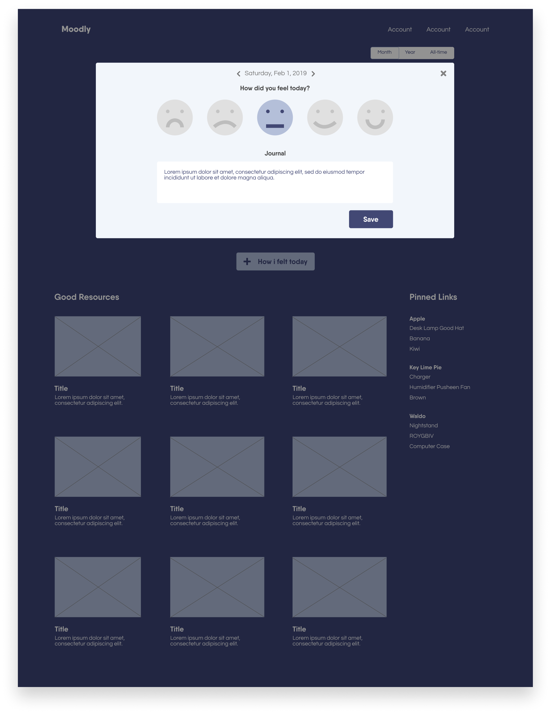

Team
6 students
Timeline
10 weeks
My Roles
Project manager, research, interviews,
test analysis, wireframes, prototype
Tools
Figma, Sketch,
Google Forms, pencil & paper
Deliverables
Sketches, survey, interviews,
wireframes, interactive prototypes,
functional React application
Overview
The objective of the project was to create an IoT device, combining a universial social issue and an emerging technology.
As a team, we decided to create a website that focused on maintaining our mental health using machine learning. Our main goal with Moodly was to make it easier for people to track their mental health and receieve helpful resources based on daily self-reporting.
The Problem
Diagnosing a mental health issue is difficult, as each person is unique and faces different challenges in life. Additionally, trying to find treatment for those issues can be extensive and expensive. And if treatment is discovered, keeping track of the recovery can be tedious and difficult, when unfamiliar with its progress.
Other than seeking professional help, there are not many tools available that assist people on sustaining mental health. Some tools are either partially complete/helpful and do not offer the services we are prepared to offer (i.e machine learning).
The Solution
Our team decided to build a website that assists people in tracking personal mental health, as well as provides them with resources that are based on the results of a predictive machine learning algorithm.
Moodly is meant to serve the community. Mental health is of high importance to many people, so we wanted to create a tool that would benefit anyone who seeked support.
1. User Research
Our drive was to uncover who would most benefit from using our website and discover our main user-population, to try and target them as best as possible. We conducted two main research methods, both methods combined for a total of three rounds of prototype iterations:
- Online Survey - the objective was to get basic understanding of user knowledge on mental health and mental health services. We created an 11-question survey that asked high-level questions about mental health and existing services avaiable to people.
- Timed Testing and A/B Testing Hybrid - we combined a timed test and an A/B test, to create and evaluate two versions of a website functionality. We targeted two main website functionalities we believed were crucial to the overall performance of the system, on five different users.
2. Data Analysis
Survey insights:
We were able to better understand what our user-pool should be and how we can design our website to best benefit them. Considering many survey responses indicated people knew little or nothing about mental health and its services, we needed to expand topics of mental health in order for users to understand what Moodly was really about.
Hybrid insights:
We analyzed the justifications as to why users would do what they did: why did users complete test B faster than test A? Why would users constantly click that button, although that button was not part of the test? Why would users miss certain information we wanted them to see? Analyzing these questions led us to change certain aspects of our website to accommodate for the misdirections users were having during the test. We were also able to ask users at the end of tests, why they did what they did and gather information that way.
3. Sketch
Using a pencil and paper, we collaboratively came up with different design ideas to generate the overall look of our initial website. This was our one and only sketch, that we transitioned into our first Figma prototype. Thereafter, we continued to make adjustments and improvements to our Figma prototype.
4. Prototype Iterations
1st Iteration
This is our first iteration Figma prototype from our sketch. We insitituted our website name, our theme color, our overall look of the website, and the flow of different webpages we should implement.
Our goal was to create an initial website and make it as simpls as possible. We wanted to have straightforward functionalities and not use any technical jargon that users could not understand.
Home Page
User Dashboard Page
Mood Tracker Page
Filled User Dashboard Page
2nd Iteration
Our second Figma prototypes were mainly aggregations of information from our online survey test results. We found it important for users to become aware of what Moodly was about and how it can be beneficial to them.
Our goal was to portray this information on the home page, as well as create a seperate "About" page for Moodly. We also wanted to improve on our impression with first-time users, by reseraching some initial questions to ask them. This would help us get a good starting point with those users and figure out a way to best assist them from the start.
Home Page
User About Page
Questionnaire Page
3rd Iteration
Our third Figma prototypes were developed from the results of our timed testing and A/B testing hybrid. We tested two website sequences: #1 the user entering their mood into the tracker, and #2 the manner of displaying resources after the user tracked their mood. We wanted to get a sense of which version of the website functionality would be more effective for users. To decide upon final design decisions, the team analyzed the test results and selected the versions with higher rankings. We did, however, take into account user suggestions and preferences after the test was over.
Our goal for this iteration was to focus on the resources aspect of the website and establish how to best correlate machine learning with those resources. We wanted to implement efficiency for the user where they can easily view and access these resources, whether it be suggestion pop-up windows or a designated resources location. The point of all this was to ensure that users did not proceed through the website, with the possibility of missing a potential resource; we wanted users to be fully aware of all accessible resources avaiable to them.
Mood Tracker Page
Machine Learning Suggestions Page
Dashboard Resources Page
Dashboard Full Resources Page

Takeaways
As my second HCI project, I can honestly say I had a lot more important roles and a lot more involvement in the design decisions of the project. As the project manager and UX strategist not only was I staying on top of our project progress, but I was also implementing methods in which we can gather information for the ending result of our project. From previous experiences, I had improved on distributing survey questions to a wide audience, as well as conducting interviews to a specific target audience. Better yet I had improved on gathering test results and portraying it a certain way, that way my team and I can make quicker/better design decisions; this helped us establish supporting evidence for all design decisions we implemented into our project.
In the future, I would like to take this project further and conduct more research methods to gather additional information. One of my team members was able to create a basic React application from our functional prototypes, that I could use to test on different users. My focus would be to enhance the resources aspect of the website, given that the purpose of this website is to help people maintain good mental health. I would also do more research on machine learning and how those algorithms are implemented to similar applications as ours. From these test results and research, I would then create another iteration of functional prototypes using either Figma or Sketch.